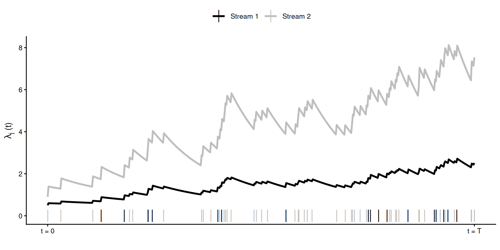
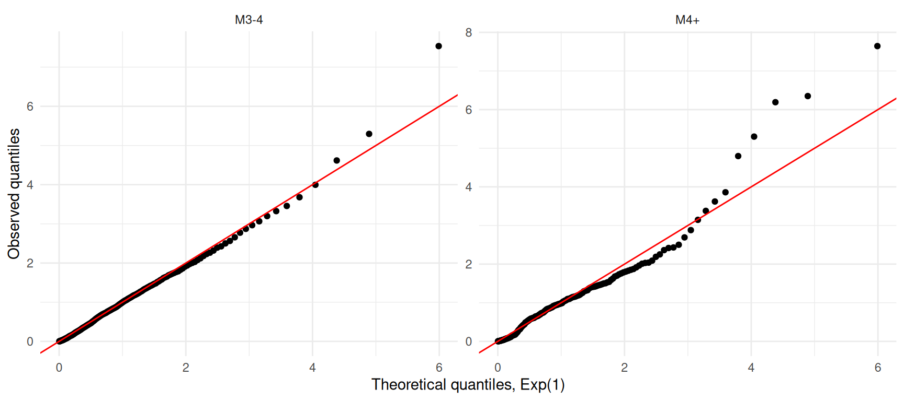

Packages used in this chapter
library(stelfi)
library(ggplot2)
write_matrix <- function(x) {
X <- apply(x, 1, function(r) paste(paste(r, collapse = "&"), "\\\\"))
paste(c("\\begin{bmatrix}", X, "\\end{bmatrix}"), collapse = "")
}Often events come in different types, or streams, and events of one type can trigger events of another. For example, large earthquakes trigger small ones, attacks by one group might provoke attacks by another, and buy orders on a stock exchange can trigger sell orders. A multivariate Hawkes process extends the univariate Hawkes process (Chapter 2) so that each stream has its own intensity, and every event can increase the intensity of every stream. In stelfi the conditional intensity of stream \(j\) (\(j = 1, ..., N\)) is
\[\lambda_j(t) = \mu_j + \sum_{k = 1}^N \alpha_{jk} \sum_{i:\tau_i<t,\ s_i = k} \text{exp}(-\beta_j (t-\tau_i)), \tag{4.1}\]
where \(s_i\) is the stream of the event at time \(\tau_i\). The parameters are
The expected number of stream \(j\) events directly triggered by a single stream \(k\) event is \(\alpha_{jk}/\beta_j\). stelfi constrains each of these to be at most 1 (i.e., \(\alpha_{jk} \leq \beta_j\)).
Plotted below are the conditional intensities of a bivariate (two stream) Hawkes process with \(\boldsymbol{\mu} = (0.5, 0.9)\), \(\boldsymbol{\alpha}\) = \(\begin{bmatrix}0.2&0.1 \\0.6&0.5 \\\end{bmatrix}\), and \(\boldsymbol{\beta} = (0.7, 0.9)\). Events are shown by the vertical dashes along the x-axis. An event in either stream increases the intensity of both streams, but an event in stream 1 has a much bigger effect on stream 2 (\(\alpha_{21} = 0.6\)) than an event in stream 2 has on stream 1 (\(\alpha_{12} = 0.1\)).
mu <- c(0.5, 0.9)
alpha <- matrix(c(0.2, 0.1 ,0.6, 0.5), byrow = TRUE, nrow = 2)
beta <- c(0.7, 0.9)
set.seed(1)
tmp <- hawkes::simulateHawkes(mu, alpha, beta, 10)
data <- data.frame(times = unlist(tmp), stream = rep(c("Stream 1", "Stream 2"), times = lengths(tmp)))
data <- data[order(data$times), ]
dat_2 <- data.frame(x = seq(min(data$times), max(data$times), length.out = 500))
tst <- stelfi:::multi_hawkes_intensity(times = data$times, alpha = alpha, mu = mu, beta = beta,
p = dat_2$x, stream = data$stream)
dat_2$`Stream 1` <- tst[[1]]
dat_2$`Stream 2` <- tst[[2]]
data_2 <- tidyr::pivot_longer(dat_2, cols = 2:3, names_to = "stream")
ggplot(data_2, aes(x = x, y = value, col = stream, group = stream)) +
geom_line(linewidth = 1) +
geom_point(data = data, aes(x = times, y = 0, col = stream, group = stream),
pch = "|", size = 5) +
theme_classic(base_size = 10) + ylab(expression(lambda[j]~"(t)")) + xlab("") +
theme(legend.position = "top", legend.title = element_blank()) +
scale_color_manual(values = c("black", "grey")) +
scale_x_continuous(labels = c("t = 0","t = T"),
breaks = seq(min(data$times), max(data$times), length.out = 2))
fit_mhawkes() needs two vectors of the same length:
times, the event times of all streams combined, sorted in ascending order with no ties (see Section 2.1.1; ties between streams are not allowed either); andstream, a character vector giving the stream of each event, so stream[i] is the type of the event at times[i].In addition:
"A_small" and "B_large").Data were simulated (using the hawkes package, Zaatour (2014)) from a bivariate Hawkes process with the parameters given above over the time period \(t \in [0, 500]\). hawkes::simulateHawkes() returns a list with the event times of each stream, which are combined into a single data frame with one row per event, sorted by time.
mu <- c(0.5, 0.9)
alpha <- matrix(c(0.2, 0.1 ,0.6, 0.5), byrow = TRUE, nrow = 2)
beta <- c(0.7, 0.9)
set.seed(1)
sim <- hawkes::simulateHawkes(mu, alpha, beta, 500)
data <- data.frame(times = unlist(sim), stream = rep(c("Stream 1", "Stream 2"), times = lengths(sim)))
data <- data[order(data$times), ]
rownames(data) <- NULLThe data are:
times stream
1 0.9472199 Stream 2
2 1.2257826 Stream 2
3 1.9019023 Stream 2
4 2.0803291 Stream 1
5 2.5700467 Stream 1
6 2.6804196 Stream 2
Stream 1 Stream 2
696 1929 stelfiThe model is fitted using fit_mhawkes() with the times, the stream of each event, and a list of starting values: a vector mu, a matrix alpha, and a vector beta. Because there are many parameters it is a good idea to ask the optimiser (optim()) to use the "BFGS" method, which uses the gradient that TMB calculates, rather than the default (Nelder-Mead), which can stop before reaching the maximum.
Estimate Std. Error
mu_1 0.6852590 0.12847503
mu_2 1.0231174 0.17303708
alpha_11 0.1194825 0.06297638
alpha_21 0.5568450 0.11822922
alpha_12 0.0886687 0.03478703
alpha_22 0.6257174 0.08045059
beta_1 0.7165866 0.29083398
beta_2 1.1221705 0.14575108The rows labelled alpha_jk are \(\alpha_{jk}\), the effect of stream \(k\) on stream \(j\).
hawkes packageThe hawkes package (Zaatour (2014)) does not have a fitting function, but it does provide the negative log-likelihood (likelihoodHawkes()), which can be minimised using optim(). The parameters are estimated on the log scale (to keep them positive) and the standard errors are obtained from the Hessian using the delta method.
nll <- function(p) {
hawkes::likelihoodHawkes(lambda0 = exp(p[1:2]),
alpha = matrix(exp(p[3:6]), nrow = 2, byrow = TRUE),
beta = exp(p[7:8]), history = sim)
}
start <- log(c(0.5, 0.5, 0.3, 0.3, 0.3, 0.3, 1, 1))
opt <- optim(start, nll, method = "BFGS", hessian = TRUE)
est <- exp(opt$par)
se <- est * sqrt(diag(solve(opt$hessian))) ## delta method
## order: mu_1, mu_2, alpha_11, alpha_12, alpha_21, alpha_22, beta_1, beta_2
hk <- cbind(Estimate = est, "Std. Error" = se)fmt <- function(x) paste0(round(x[1], 3), " (", round(x[2], 3), ")")
## put the hawkes estimates in the same (column-major) order as stelfi
hk <- hk[c(1, 2, 3, 5, 4, 6, 7, 8), ]
params <- data.frame(Truth = c(mu, as.vector(alpha), beta),
stelfi = apply(stelfi, 1, fmt),
hawkes = apply(hk, 1, fmt))
knitr::kable(t(params), col.names = c("$\\mu_1$", "$\\mu_2$", "$\\alpha_{11}$", "$\\alpha_{21}$",
"$\\alpha_{12}$", "$\\alpha_{22}$", "$\\beta_1$", "$\\beta_2$"),
escape = FALSE)| \(\mu_1\) | \(\mu_2\) | \(\alpha_{11}\) | \(\alpha_{21}\) | \(\alpha_{12}\) | \(\alpha_{22}\) | \(\beta_1\) | \(\beta_2\) | |
|---|---|---|---|---|---|---|---|---|
| Truth | 0.5 | 0.9 | 0.2 | 0.6 | 0.1 | 0.5 | 0.7 | 0.9 |
| stelfi | 0.685 (0.128) | 1.023 (0.173) | 0.119 (0.063) | 0.557 (0.118) | 0.089 (0.035) | 0.626 (0.08) | 0.717 (0.291) | 1.122 (0.146) |
| hawkes | 0.704 (0.127) | 1.023 (0.173) | 0.125 (0.065) | 0.557 (0.118) | 0.088 (0.037) | 0.626 (0.08) | 0.746 (0.316) | 1.122 (0.146) |
The two approaches give very similar estimates, and both recover the true values well. In particular both correctly identify that events in stream 1 strongly excite stream 2 (\(\alpha_{21}\)) but not the other way around (\(\alpha_{12}\)).
The fitted intensities (top) and the data (bottom) are plotted using show_multivariate_hawkes().
In Section 3.3 the magnitude of each Canterbury earthquake was used as a mark. An alternative is to split the earthquakes into two streams, small (magnitude 3 to 4) and large (magnitude 4 and above), and ask how much each type triggers the other. The data are prepared exactly as before (times in days, jittered to remove ties).
data(nz_earthquakes, package = "stelfi")
eq <- data.frame(time = nz_earthquakes$origintime, magnitude = nz_earthquakes$magnitude)
eq$days <- as.numeric(difftime(eq$time, min(eq$time), units = "days"))
set.seed(1)
eq$days <- eq$days + runif(nrow(eq), 0, 1 / (24 * 60))
eq <- eq[order(eq$days), ]
eq$days <- eq$days - eq$days[1]
## streams (alphabetical order: "M3-4" is stream 1, "M4+" is stream 2)
eq$size <- ifelse(eq$magnitude >= 4, "M4+", "M3-4")
table(eq$size)
M3-4 M4+
3445 379 Estimate Std. Error
mu_1 0.25435100 0.01649999
mu_2 0.06004952 0.00622599
alpha_11 1.97197679 0.11827898
alpha_21 1.58893270 0.26960421
alpha_12 2.67626685 0.15977508
alpha_22 30.92092543 4.43169151
beta_1 2.67634736 0.15977362
beta_2 63.48313426 8.11099746## estimated parameters as a vector mu, a matrix alpha, and a vector beta
mhawkes_pars <- function(fit) {
cf <- get_coefs(fit)[, 1]
N <- length(table(fit$env$data$stream))
list(mu = cf[1:N],
alpha = matrix(cf[(N + 1):(N + N^2)], nrow = N), ## column-major order
beta = cf[(N + N^2 + 1):(2 * N + N^2)])
}Here stream 1 is small earthquakes and stream 2 is large earthquakes. It is easiest to interpret the estimates as the expected number of events of each type directly triggered by one event, \(\alpha_{jk}/\beta_j\):
trigger
triggered small large
small 0.737 1.000
large 0.025 0.487Notice that the estimate of \(\alpha_{12}/\beta_1\) (small earthquakes triggered by a large one) is 1, the maximum allowed by stelfi. In reality large earthquakes trigger many more than one aftershock each, so this constraint is limiting the model here, and the estimate should be read as “at least one”. The marked model (Section 3.3), where the effect of an earthquake grows continuously with its magnitude, does not have this limitation, and is probably a more natural model for these data.
The ideas of Section 2.4 apply to each stream separately: if the model is correct then, for each stream \(j\), the compensator \(\Lambda_j(t) = \int_0^t \lambda_j(s) ds\) evaluated at the times of the stream \(j\) events transforms them into a unit rate Poisson process, so the differences between consecutive values should be \(\text{Exp}(1)\). Note that \(\lambda_j(t)\) depends on the events in all streams. For Equation 4.1 the compensator is
\[\Lambda_j(t) = \mu_j t + \sum_{k=1}^N \frac{\alpha_{jk}}{\beta_j} \sum_{i:\tau_i < t,\ s_i = k} \left(1 - \text{exp}(-\beta_j (t - \tau_i))\right).\]
show_hawkes_GOF() does not (yet) work for multivariate models, but the compensator differences are easily calculated with the function below (which uses the helper mhawkes_pars() defined in Section 4.3), and the tests from Section 2.4 applied to each stream.
mhawkes_compensator_differences <- function(fit) {
times <- fit$env$data$times
stream <- fit$env$data$stream
pars <- mhawkes_pars(fit)
s <- as.integer(factor(stream))
out <- lapply(seq_along(pars$mu), function(j) {
comp <- sapply(times[s == j], function(t) {
prev <- times < t
pars$mu[j] * t + sum(pars$alpha[j, s[prev]] / pars$beta[j] *
(1 - exp(-pars$beta[j] * (t - times[prev]))))
})
diff(c(0, comp))
})
names(out) <- sort(unique(stream))
out
}For the simulated example (where the model is correct) there is no evidence of lack of fit in either stream:
Stream 1 Stream 2
KS 0.8882235 0.5665953
Ljung_Box 0.1629018 0.1751817For the earthquake model:
M3-4 M4+
KS 0.0002077805 1.533784e-02
Ljung_Box 0.0000000000 5.157212e-10QQ plots of the compensator differences for each stream against the \(\text{Exp}(1)\) distribution are shown below.
qq <- do.call(rbind, lapply(names(cd_eq), function(nm) {
pp <- ppoints(200)
data.frame(stream = nm, theoretical = qexp(pp), observed = quantile(cd_eq[[nm]], pp))
}))
ggplot(qq, aes(x = theoretical, y = observed)) +
geom_point() + geom_abline(intercept = 0, slope = 1, col = "red") +
facet_wrap(~stream, scales = "free") + theme_minimal() +
xlab("Theoretical quantiles, Exp(1)") + ylab("Observed quantiles")
The QQ plots show that the distribution of the compensator differences is reasonably close to \(\text{Exp}(1)\) for both streams (apart from the longest gaps between small earthquakes), so the KS tests reject the model mainly because there are a lot of data. The Ljung-Box tests, however, give very small p-values: short gaps tend to follow short gaps, so the model is not fully capturing the clustering of earthquakes. As for the univariate and marked models (Section 3.4), the likely reasons are that exponential decay is too simple to describe aftershock sequences and that (as discussed above) the constraint on \(\alpha_{12}\) prevents a large earthquake from triggering many small ones.